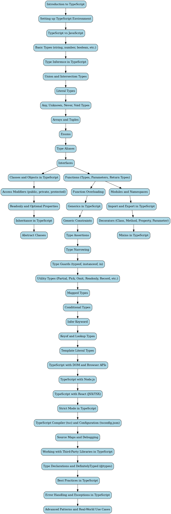

TypeScript Resources
Roadmap

YouTube Tutorials


Certification Courses
Website Links
Interview Questions
- What is TypeScript and how does it differ from JavaScript?
- Explain the concept of type inference in TypeScript.
- What are interfaces in TypeScript and how do you use them?
- How does TypeScript handle optional properties?
- What is a union type and when would you use it?
- How do you use generics in TypeScript?
- Explain the use of enums in TypeScript.
- How does TypeScript improve code maintainability?
- Describe how modules work in TypeScript.
- What are decorators and when should you use them in TypeScript?